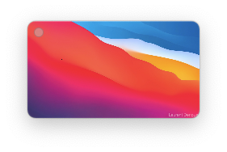
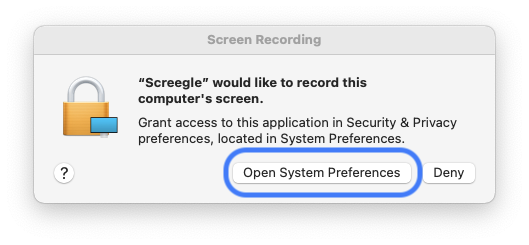
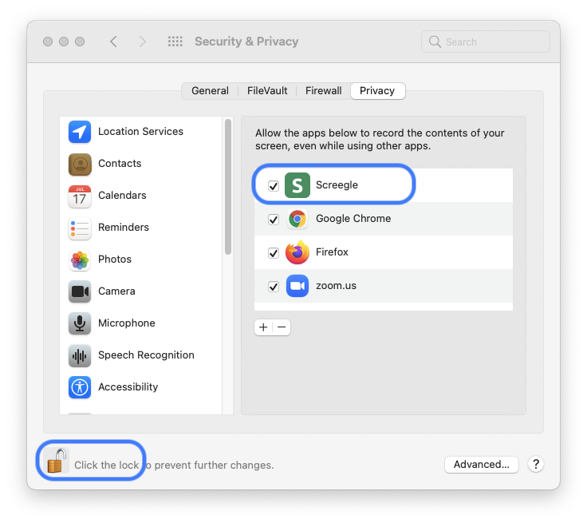

Open the Screegle app and notice its icon in your menu bar along with the Screegle preview window 
To add (or remove!) a window shown on your desktop, simply press
To remove a window, you can also directly click its image in the Screegle preview.
The first time you try to share a window, you will see a dialog asking to grant screen recording permission (and the window you wanted to share will show as a white rectangle inside the Screegle preview). See  and 
When you are ready to share your windows in any video conferencing apps (such as Zoom, Google Meet, Microsoft Teams and others),
open their "share my screen" option and pick the Screegle Share window.
The Screegle Share window contains a high quality version of the Screegle preview, allowing you to send your clean desktop composed by the windows you've selected. At any time, remember that you can quickly add or remove windows you're showing by simply Command or Control + F1 over that window.
You can try sharing your Screegle Window at this sample test page.
Click the Start button and pick the "Screegle Share" window.
You can also download the Screegle Camera to share Screegle inside Zoom and other apps that support virtual cameras, such as Chrome with Google Meet. Once installed, simply switch from your webcam to the camera named Screegle and you'll immediately show your screegle windows.
Quickly unshare all windows with "Hide All Windows" in the menu.
To show an enhanced cursor with a blue circle, hold your ⌘ key while moving your cursor. It is ideal to emphasize something important as you share or record.
You can customize the text overlay that appears on the bottom right corner, including showing nothing by enter a blank text.
For a more realism, you can optionally show a Dock image showing default application icons. It will appear at the bottom of the screegle window, and will always be shown above windows you share.
You can change the default background image. For example you could pick a company background to show a more professional background when sharing your screen with Screegle.
Screegle lets you record videos of your screegle, including with your voice if you allow microphone access. Ideal to send co-workers a screencast or for teachers to post instructions.
Please contact laurent@appblit.com if you need help or have ideas for improving the app!
Ask us about our custom builds designed for your company, including your company name, logo and easy download for your employees, giving them a safe option for screen sharing.